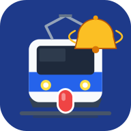

1
ダウンロードする
上の青いボタンを押します。「このファイルは…」と出たら ダウンロード または OK。
「有害なファイルの可能性」と出ても、ストア外アプリ共通の確認です。詳細 →「ダウンロードを続行」で進めます。

やることは3つだけ。
「入れる」→「開く」→「ホームに追加」です。
✓ 有料ノート購入者向けの公式アプリです（ウイルスではありません）
上の青いボタンを押します。「このファイルは…」と出たら ダウンロード または OK。
「有害なファイルの可能性」と出ても、ストア外アプリ共通の確認です。詳細 →「ダウンロードを続行」で進めます。
画面上の通知にある 開く を押し、インストール を押します。
「デバイスを保護するためブロック」と出たら 詳細 →「インストールする」。初回だけ「この提供元を許可」を ON にする場合があります。
インストール後に 開く。アプリの中で ホーム画面に追加する を押し、確認で 追加。
これで青い電車＋ベルのアイコンがホーム画面に並びます。以後はそこから起動してください。
完了です。初回はマイクを「許可」し、駅名を入れて「監視を開始する」を押すだけです。
アプリを開いて「ホーム画面に追加する」ボタンを押しても追加できます。
機種の設定で「新しいアプリのアイコンをホームに追加」がOFFだと自動では並びません。ホーム画面の設定でONにすると次回から自動になります。
Google Play 以外から入れるアプリには、Android が必ず同じ確認を出します。危険と判定された意味ではありません。
古い版が残っていると失敗することがあります。
ダウンロード自体が止まる場合は、圧縮版をお試しください。
圧縮版でダウンロードする圧縮版は「ファイル」アプリで開き、中の StationWakeUp-Official をタップするとインストールできます。